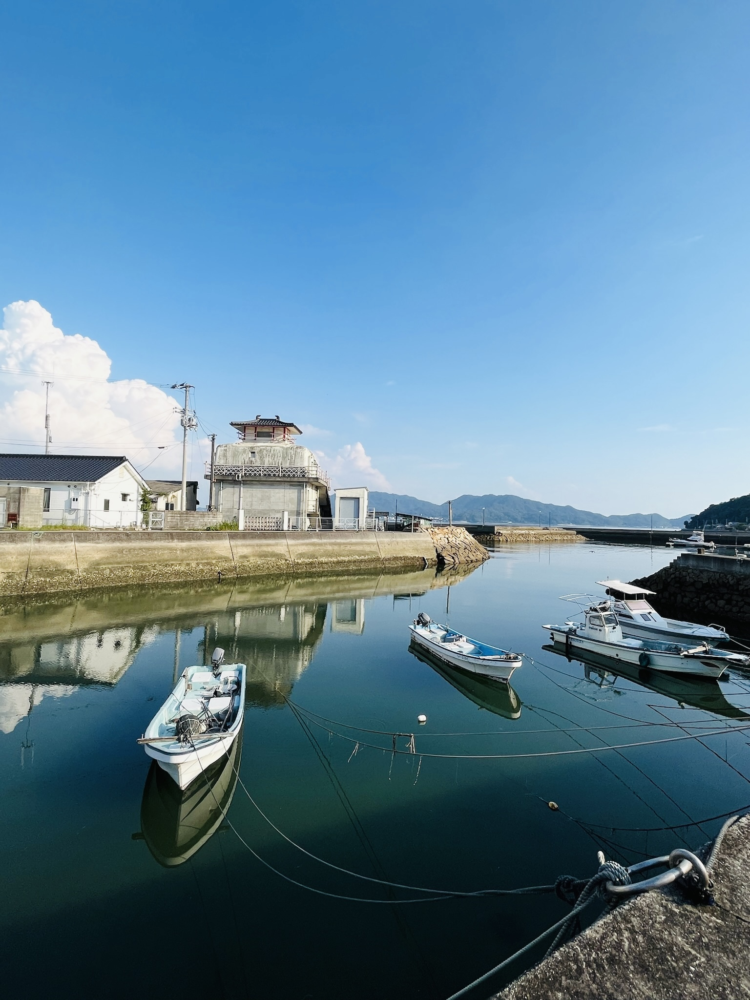

About
瀬戸内みらい創産は、香川を拠点に活動する若者たちが立ち上げた会社です。
島の船が減り、醤油蔵が閉まり、若者が出ていく。そんな地方の現実を幼い頃から見てきた私たちだからこそ、「何かできることがある」と信じています。
AI・デジタル技術と地域への深い愛着を掛け合わせ、香川から日本全体に通じる解決策を生み出していきます。

「合理化が求められる時代だからこそ、
人間が何ができるかを考え、
自分を活かさなければならない。」
— 代表メッセージより
Services
地方中小企業・行政・地域団体の「変わりたいけど、どうすればいいかわからない」に応えます。 若者の視点・最先端技術・地域への深い愛着を組み合わせた、伴走型の支援を行います。
DX支援・業務効率化・Web制作・システム構築・3Dモデリングまで。「変わりたいけど何から始めれば」というご相談から一緒に考えます。
採用サポート・広報コンサル・社内研修。若者目線で「選ばれる会社」への変革を、コンテンツ制作から組織設計まで一緒に進めます。
無人島・離島を活かした社員研修、島めぐりツアー、イベント企画、老舗リブランディング。地域の資源を、新しい形で活かします。
Works
NPO法人 / 地域活性
高校2年生で香川県内の中高生が地域に関われる場を作るためNPOを設立。防災啓発・イベント・観光パンフ制作など多方面で活動。
イベント制作
中高生が自分たちの「好き」を活かして出演するステージイベント。地域の若者が輝ける場を創出した。
政策提言 / 行政連携
香川県知事・各市町村長との意見交換会・政策提言の場に継続的に参加。若者視点での地域課題解決策を提言。